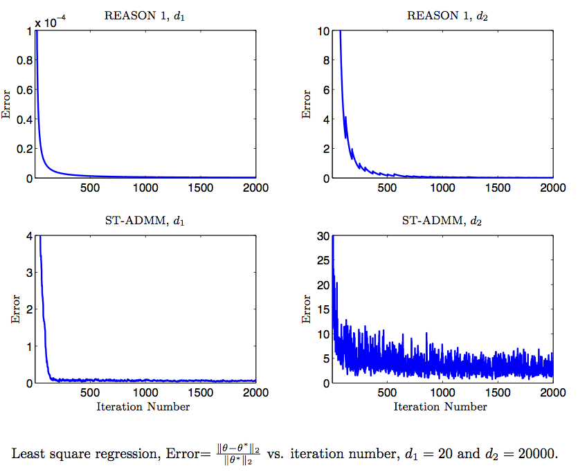
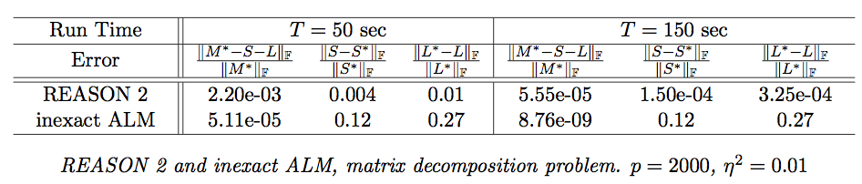

EECS, University of California, Irvine, CA 92697.
With current trends in large-scale machine learning, we require methods that are fast, cheap to implement and have high accuracy. The algorithm should be robust to noise as in reality we only have access to noisy samples and we need to make fast decisions based on such samples. One of the main applications of this framework is streaming.
We propose an efficient algorithm based on ADMM with guarantees for high-dimensional problems. Our algorithm is Regularized Epoch-based Admm for Stochastic Optimization in high-dimensioN (REASON).
It is based on epoch-based annealing and consists of inexpensive steps which involve projections on to simple norm balls. The proposed method can be applied to large classes of problems in sparse optimization, matrix decompostion and graphical model selection. Famous sparse optimization problems include classification, regression, low-dimensional structures: group-sparse vectors and low-rank matrices. Matrix decomposition into sparse and low rank components in the simplest case is the same as the famous RPCA problem. In addition, our framework is applicable to graphical model selection problem for both sparse model and latent variable graphical model selection.
We provide explicit bounds for the sparse optimization problem and the noisy matrix decomposition problem. For sparse optimization, we establish that the modified ADMM method has an optimal convergence rate that matches with the minimax lower bounds for sparse estimation. For matrix decomposition into sparse and low rank components, we provide the first guarantees for any online method, and prove a tight convergence rate. Our guarantees match the minimax lower bound with respect to sparsity level, rank of the low-rank part and number of iterations. In addition, we match the minimax lower bound with respect to the matrix dimension, for many important statistical models including the independent noise model, the linear Bayesian network and the latent Gaussian graphical model under some conditions.
Experiments show that for both sparse optimization and matrix decomposition problems, our algorithm outperforms the state-of-the-art methods. In particular, we reach higher accuracy with same time complexity.


“Multi-Step Stochastic ADMM in High Dimensions: Applications in Sparse Optimization and Noisy Matrix Decomposition” by H. Sedghi, A. Anandkumar, E. Jonckheere. Preprint, Feb. 2014. An abridged version appears in Proc. of NIPS 2014.
Download: PDF. Code. NIPS-version. video.